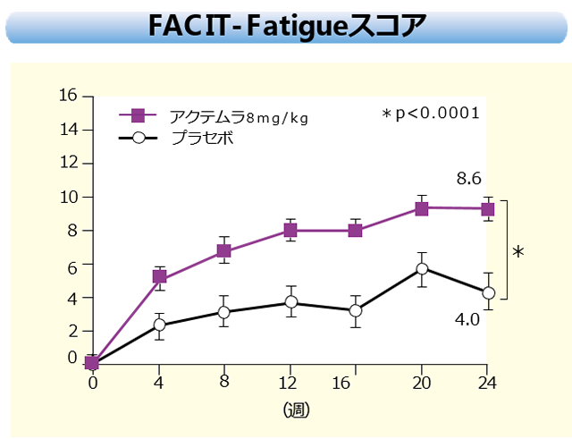

MTX効果不十分例へのアクテムラ投与により、24週後のQOL関連指標が有意に改善した（OPTION Study）
【対象】罹病期間6カ月以上で、MTXによる治療を12週間以上継続しても効果不十分のRA患者623名
【方法】MTX併用下のプラセボ群、アクテムラ群（8㎎/㎏4週間隔点滴投与）に無作為割付し、有効性および安全性を24週後に評価した

アクテムラ投与により生活の質（HAQ-DI）や疲労度（FACIT-Fatigueスコア）が改善し、メンタル面でも改善している
【対象】罹病期間6カ月以上で、MTXによる治療を12週間以上継続しても効果不十分のRA患者623名
【方法】MTX併用下のプラセボ群、アクテムラ群（8㎎/㎏4週間隔点滴投与）に無作為割付し、有効性および安全性を24週後に評価した
アクテムラ投与により生活の質（HAQ-DI）や疲労度（FACIT-Fatigueスコア）が改善し、メンタル面でも改善している